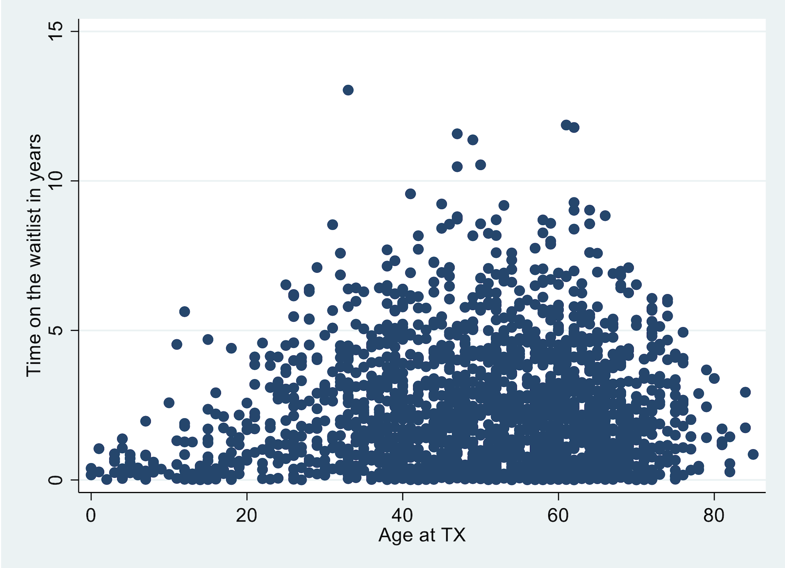
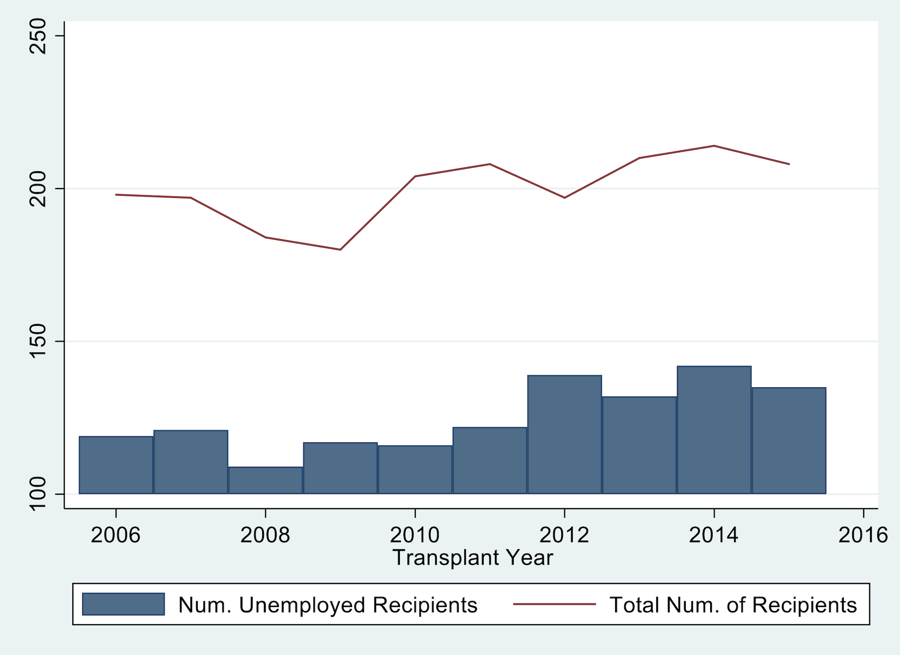
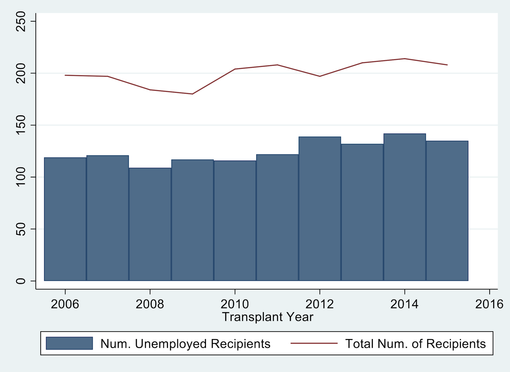
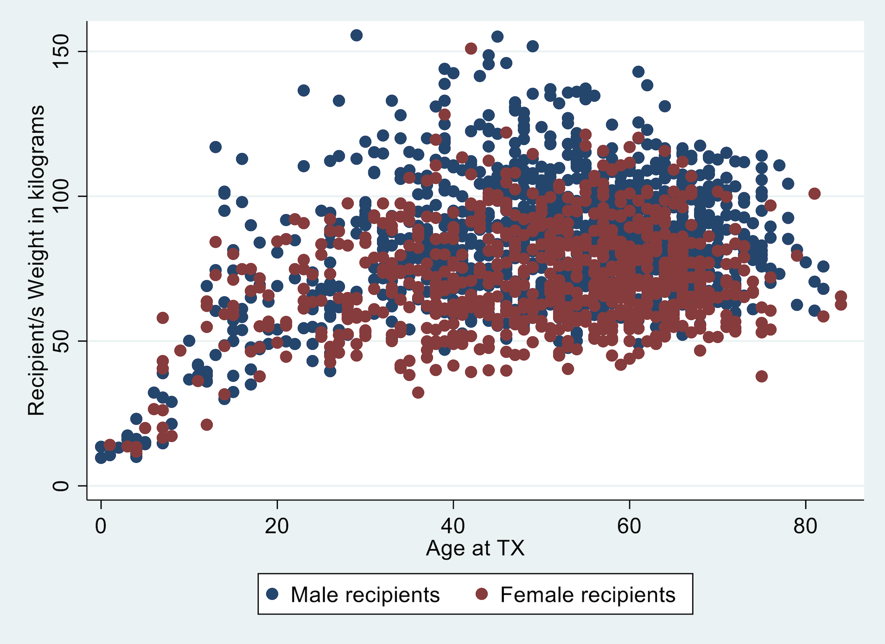
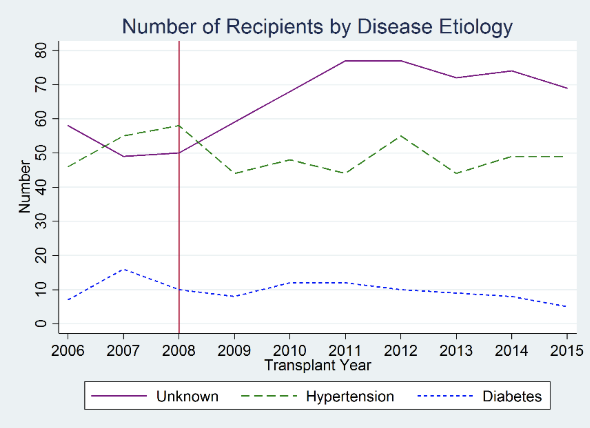

Lab 5#
Part 1#
Write a .do file which imports the requested data sets and creates the graphs described below using the slides we have discussed in class. Your .do file (lab5_lastname.do) must create a log file (lab5_lastname.log). This file will contain your answers for both part 1 and part 2 of today’s lab. Your .do file should follow conventions for .do file structure described in class. Do not submit your log files as part of the assignment.
Look at lastname_q1.png through q5.png
Import transplants.txt. Create a variable label for the variable
wait_yrs, such as “Time on the waitlist in years.” Then, create a scatter plot withwait_yrson the y-axis and age at transplant (age) on the x-axis.
import delimited https://raw.githubusercontent.com/jhustata/livre/main/transplants.txt, clear
lab var age "Age at TX"
lab var wait_yrs "Time on the waitlist in years"
twoway scatter wait_yrs age
graph export lab5q1.png, replace
. import delimited https://raw.githubusercontent.com/jhustata/livre/main/transplants.txt, clear
(encoding automatically selected: ISO-8859-1)
(26 vars, 2,000 obs)
. lab var age "Age at TX"
. lab var wait_yrs "Time on the waitlist in years"
. twoway scatter wait_yrs age
. graph export lab5q1.png, replace
file /Users/d/Dropbox (Personal)/1f.ἡἔρις,κ/1.ontology/summer/lab5q1.png saved as PNG format
.
end of do-file
.

Import tx_yr.dta (created by lecture5_2019.do). In this task you will create one graph that is two plots overlaid on one another. The graph should illustrate (1) the number of recipients who were unemployed (variable: not_working) per year (yr) as a bar graph and (2) the total number of transplants (variable: total) per year (yr) as a line graph.

Fix your graph from question 2 so that the y-axis begins at 0 and labels go from 0 to to 250 by increments of 50.

Part 2#
Edit your code for questions 1-3 so that you export the three graphs as lastname_q1.png, lastname_q2.png, and lastname_q3.png.
Import transplants.dta. Create a graph that is two scatter plots overlaid. Graph recipient weight in kilograms (
rec_wgt_kg) on the y-axis and age at transplant (age) on the x-axis, with separate colors and/or makers for males and females. (HINT: if might be helpful). The legend should denote the two categories as “male recipients” and “female recipients”. Export the graph aslastname_q4.png.

Import tx_yr.txt (created by lecture5_2019.do). Graph unknown, hypertensive, and diabetes by yr. Include a title, y-axis title, a red-vertical line at year 2008, change the colors and patterns of each line, change the labels in the legend, make the legend span 3 columns, and fix the y-axis. The graph should look like this:

Export the graph as lastname_q5.png.
For an extra point: Add the text “Policy Change” to the figure near the red line.